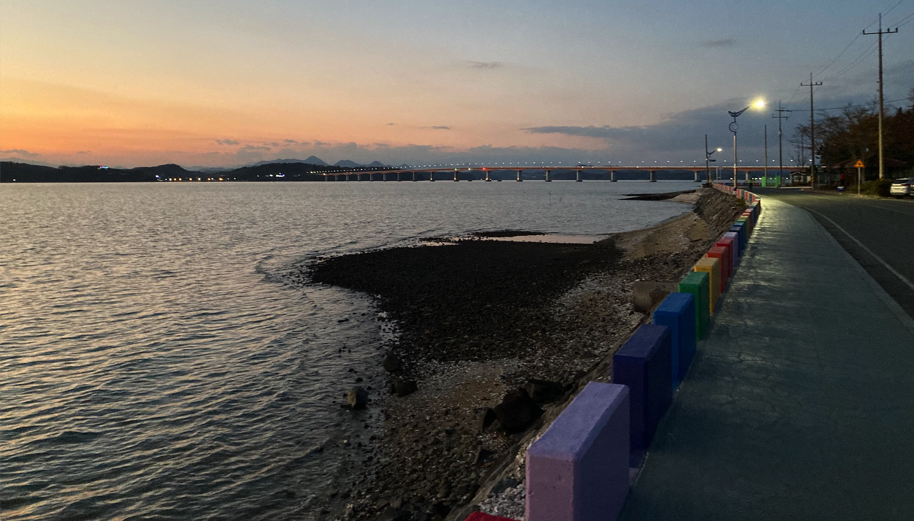
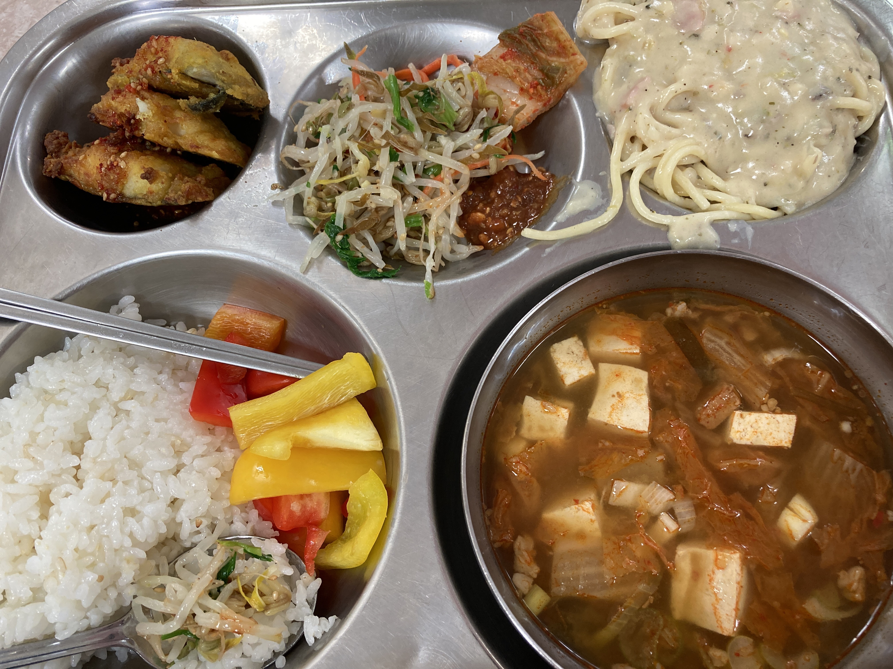

I was born and raised in small town Connecticut with two siblings I'm very close to. I earned a General Studies associate degree at Middlesex Community College and transferred to Central Connecticut, where I earned my bachelors in International Studies. My journey didn't start in International Studies, but that's where it ended after changing majors from Music Education. From there I got a certificate in TESOL (Teaching English Secodary/Other Language) and moved to the Republic of Korea to teach English.
I love to sing. My best friend and students tell me I'm terrible at dancing. I hate bananas with a fiery passion. I enjoy hiking but steep uphills are my enemy. My current pasttime is putting my laptop in a backpack, going for an extended walk, and doing work at a cafe along the way for a physical break.
When I turned 14, I started volunteering at my local fire department and only stopped when I left the country nine years later. The biggest part of my life that I miss about the USA is my FD family.
In the USA, I was happily involved in the LGBTQ+ community, but unfortunately where I live now, that can put my job (thus visa) in jeopardy, so I keep my involvement to smaller online circles and supporting others when/how I can.
Here in Korea, I help run and moderate one of the largest forums for Native English Teachers. While I help acclimate local teachers in person, a bulk of my involvement stems from creating tutorials, sharing materials, and hosting materials in my own separate cloud. I'm also known for hunting down resources and sharing current news. Besides my actual paying job, this takes up a majority of my existence.
Check out about my favorite soup, kimchi jjigae!
